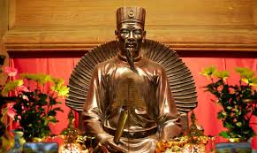
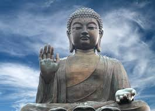
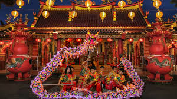
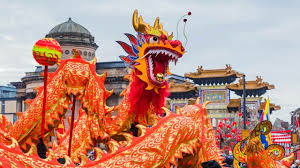

Religie și filozofie: Confucianismul, taoismul și budismul au influențat profund gândirea și comportamentul chinezilor.
 Artă: Caligrafia, pictura cu tuș, ceramica și teatrul tradițional (Opera din Beijing) sunt forme artistice celebre.


Sărbători: Cea mai importantă este Anul Nou Chinezesc, sărbătorit cu dragoni, lampioane și mâncăruri tradiționale.

Simboluri: Dragonul simbolizează puterea și norocul, iar culoarea roșie este considerată aducătoare de fericire.
